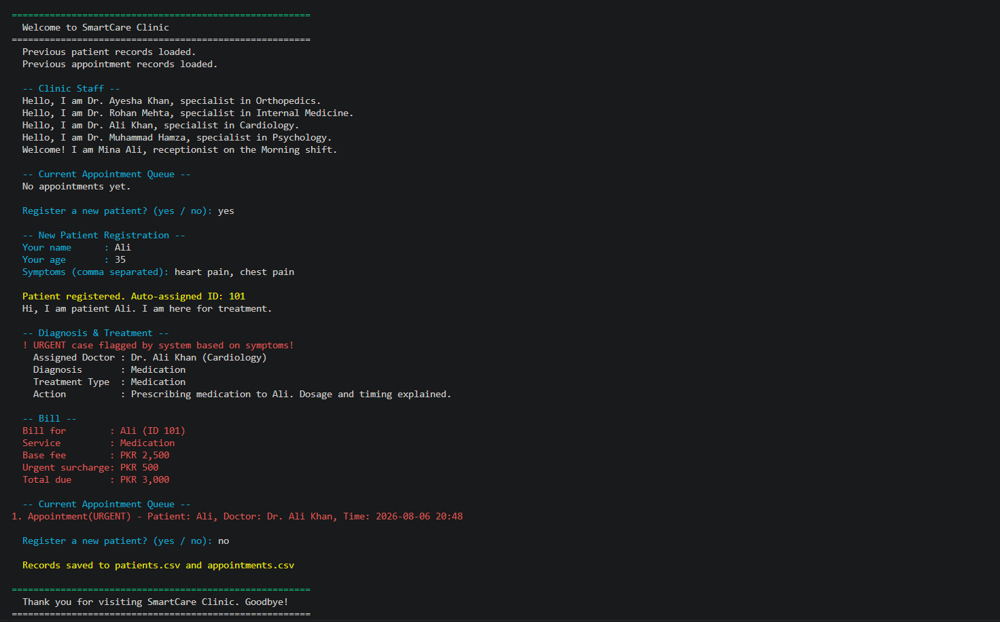
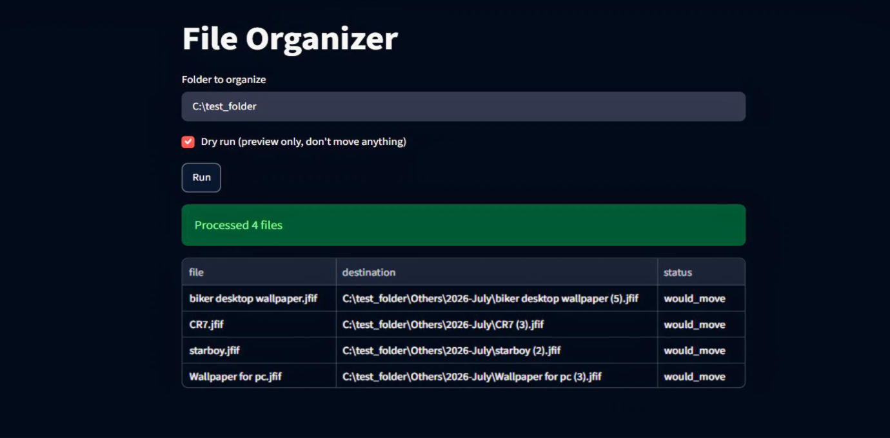
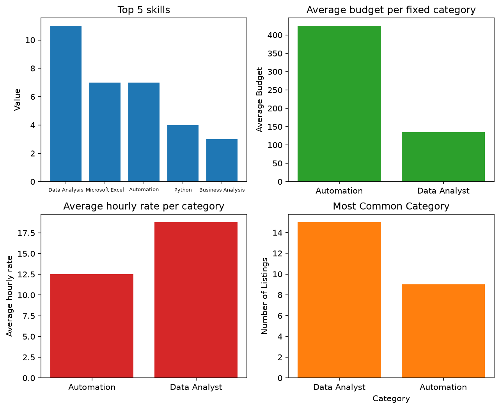

Rania Rashid
BS Artificial Intelligence · Ghazi University, DG Khan
I build small Python tools, explore data carefully, and I'm working toward a career in AI engineering. I care about code I can explain and about saying plainly what a project does and does not show.
Currently learning
Machine learning with scikit-learn, starting right after finishing exploratory data analysis. Alongside it: the linear algebra and statistics behind the models. Next on my list is applying these to real datasets, then building LLM-powered tools.
Projects
SmartCare-Clinic

A clinic appointment and diagnosis system that started as a terminal-based OOP project and grew into a full REST API. Auto-generates patient IDs, routes symptoms to the right specialty, flags urgent cases, assigns doctors, and bills with an urgency surcharge — backed by PostgreSQL via SQLAlchemy, versioned Alembic migrations, and a FastAPI layer that enforces no-double-booking at the database level, all containerized with Docker Compose so it runs with one command, no local Postgres install required.
What I learned. Beyond the original OOP work (inheritance, polymorphism, encapsulation, ABCs, operator overloading): SQLAlchemy 2.0 ORM modeling, Alembic migrations (including adopting an existing hand-built schema instead of dropping/recreating), FastAPI dependency injection for session lifecycle, and designing a layered architecture (models/schemas/crud/service/routes) so business logic is reused, not duplicated, across the terminal app and the API. Most recently: multi-container Docker orchestration — service networking, healthchecks to solve startup-ordering races, persistent volumes, and rebuilding a migration history that had silently depended on a hand-run schema.sql instead of being self-contained.
File Organizer Automation

A command-line utility that organizes files into folders by type and date while avoiding risky moves when a file is still in use. Handles real filesystem edge cases gracefully.
What I learned. Learned that a script which crashes on a locked file isn't done yet. pathlib and shutil over manual string path handling. Also built a Streamlit UI so non-terminal users can run it.
FreelanceLens

A small data analysis project exploring manually collected freelance listings to identify common skills, categories, and budget patterns — fixed-price and hourly kept separate.
What I learned. Small sample sizes lie if you let them: categories with only 2–3 listings get their average reported alongside the sample size. Budget ranges were recorded at their minimum value — a known bias I documented rather than hid.
Skills
LanguagePython
DataNumPy, pandas, matplotlib, seaborn
DatabasesPostgreSQL, SQLAlchemy, Alembic
BackendFastAPI, Docker
ToolingGit and GitHub, pytest, Streamlit
PracticesObject-oriented programming, exploratory data analysis
Certifications
Google IT Automation with Python — Google · Coursera, 7 courses completed
Computer Operator — TEVTA, completed
Contact
Open to internships, collaborative work, and opportunities to build practical Python tools that solve real problems. The quickest way to reach me is email.